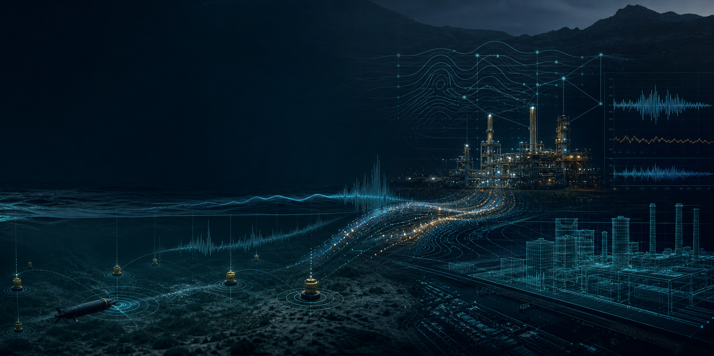
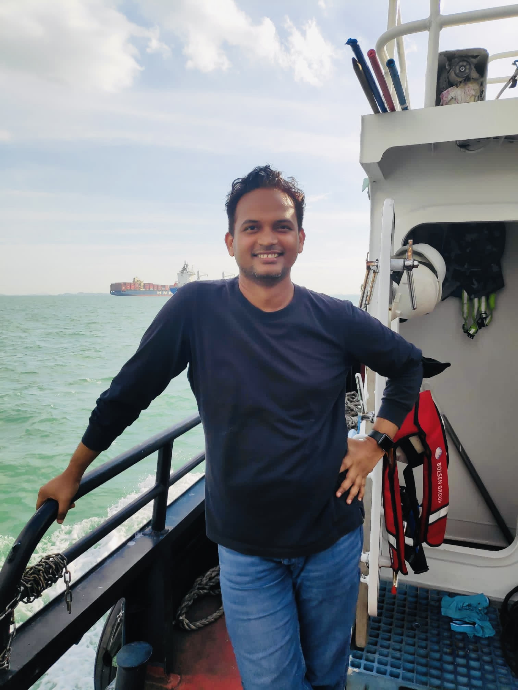

Current
Principal R&D Engineer, Halliburton Singapore

Applied AI · Signal Processing · Digital Twins
I develop applied AI and signal-processing systems that turn noisy, limited data into dependable decisions across energy, industrial, and communication environments.
Principal R&D Engineer, Halliburton Singapore
Ph.D., Electrical & Computer Engineering, NUS
Telemetry, sensing, time-series models, edge data systems

About
I develop intelligent systems for environments where data are scarce, noisy, delayed, and costly to acquire. By combining applied AI, signal processing, communications, and physics-based modelling, I turn difficult measurements into reliable engineering insight and deployable technology.
Across academic research, deep-tech R&D, and industrial engineering in Singapore, I have carried ideas from mathematical formulation to field-tested systems. My work spans downhole telemetry, digital twins, real-time signal decoding, adaptive communications, sensor fusion and localisation, and underwater acoustic networks, with a consistent focus on solutions that perform beyond the laboratory.
Selected work
A few representative projects that show how the research moves between algorithms, field systems, software, and industrial deployment.
At Halliburton, I work on signal processing, time-series modelling, and physics-based simulation for downhole telemetry systems operating in high-noise drilling environments.
A distributed receiver architecture developed for long-range underwater acoustic communication, where spatially separated devices share signal observations and combine them to recover transmitted data.
View patentDesigned and implemented communication, localisation, and multisensor methods for difficult field environments, including diver systems and subsea operations.
Contributor to unetpy, fjagepy, and the unetsocket module.
Research themes
My interests are practical and systems-oriented. I like problems where models, sensors, communications, and deployment constraints all have to be considered together.
Signal decoding, anomaly detection, and measurement-driven modelling for telemetry systems with noise, attenuation, and limited bandwidth.
Physics-based simulators and synthetic signal generation for algorithm design, validation, and operational decision support.
Adaptive links, cooperative reception, localisation, and robust data movement across bandwidth-, energy-, and compute-constrained networks.
Experience
My professional path has kept me close to both the mathematical and operational sides of engineering.
Signal processing, applied AI, digital twins, and real-time decoding for downhole telemetry systems.
Adaptive communications, signal processing, edge deployment, sensor fusion, and field-validated subsea systems.
Optimisation and dynamic programming for communication networks operating with long propagation delays and constrained bandwidth.
Wireless stacks, platform abstraction layers, Zigbee applications, and smart energy devices at Atmel and STMicroelectronics.
Publications
A selection of peer-reviewed work spanning industrial telemetry, adaptive communication, learning-based link optimisation, and field-tested systems.
P. Anjangi, R. D. Navarro, R. R. Sobhana, F. C. O. Chagas and B. Pillai, SPE Conference at Oman Petroleum & Energy Show.
W. Shuangshuang, M. Chitre and P. Anjangi, IEEE Journal of Oceanic Engineering.
W. Shuangshuang, M. Chitre, P. Anjangi, IEEE OCEANS.
P. Anjangi and M. Chitre, IEEE Global OCEANS.
P. Anjangi and M. Chitre, Fourth Underwater Communications and Networking Conference.
P. Anjangi and M. Chitre, IEEE Journal of Oceanic Engineering.
P. Anjangi and M. Chitre, IEEE Third Underwater Communications and Networking Conference.
Best Experimental Student Paper Award, ACM WUWNet, Washington DC.
Teaching and mentorship
I enjoy teaching and mentoring through projects. My preferred mode is to connect theory to working prototypes, field data, testing, and clear technical communication.
Past teaching and workshop experience includes NUS signals and systems laboratories, communication and networking tutorials, software-defined modem workshops, and industry mentorship.
Contact